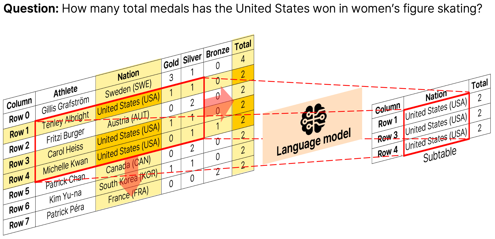
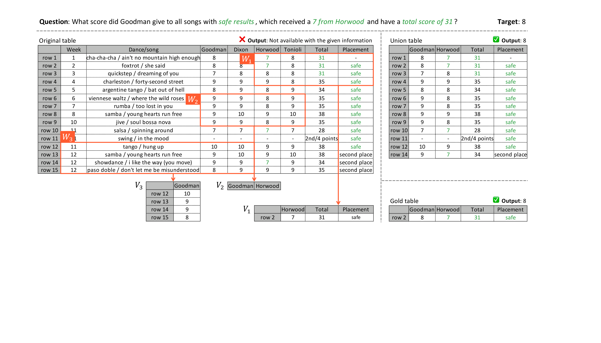
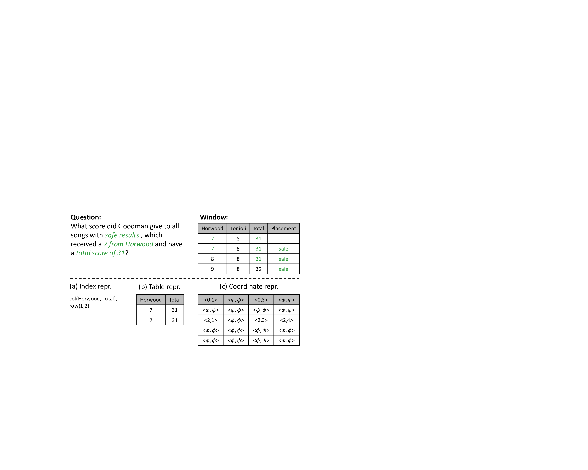
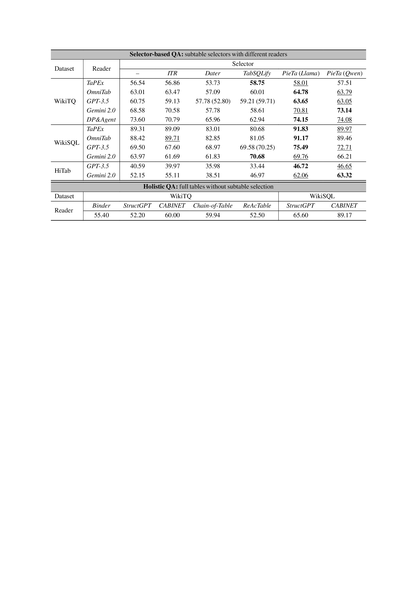
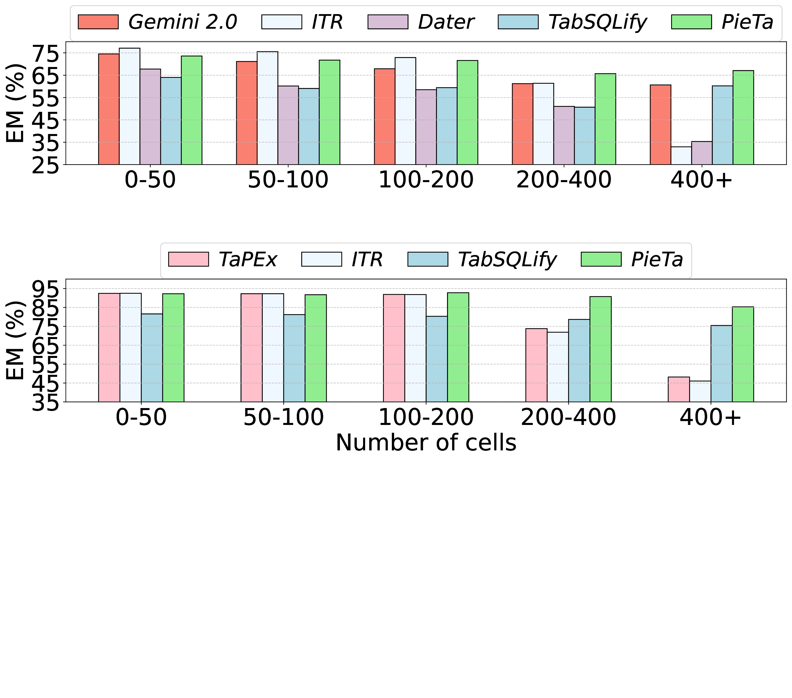
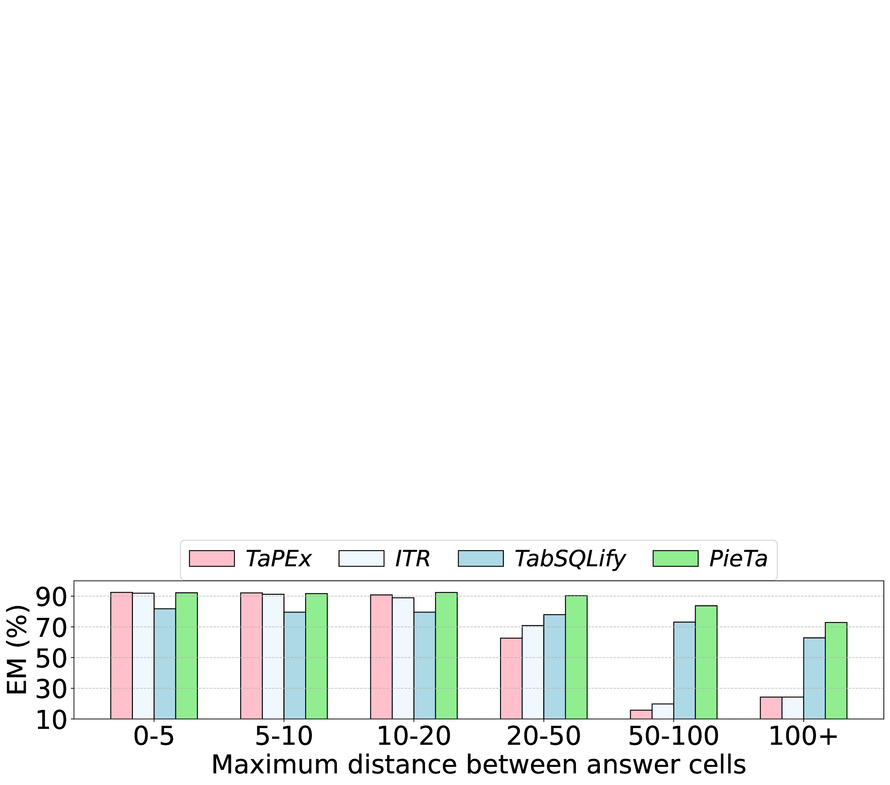

Accepted to ACL 2026
Applying language models (LMs) to tables is challenging due to the mismatch between the two-dimensional structure of tables and the one-dimensional inputs expected by LMs. This mismatch forces linearization, making LMs particularly sensitive to irrelevant cells. Subtable selection mitigates this challenge by isolating question-relevant content prior to answer generation. However, existing approaches either rely on independent row or column selection, failing to capture cross-row and cross-column dependencies, or attempt global reasoning and face challenges similar to holistic table QA under noisy contexts. We propose PieTa (Piece of Table), a divide-and-conquer subtable selection framework that progressively aggregates locally selected evidence without requiring explicit global reasoning. PieTa uses an iterative, window-based multi-resolution process to construct compact subtables that capture global dependencies while limiting LM exposure to irrelevant content. Extensive experiments demonstrate that PieTa consistently outperforms prior subtable-based and holistic table QA approaches.

Figure 1 in the paper. Overview of the proposed PieTa framework. Given an input table and a question, PieTa synthesizes a subtable by iteratively dividing the table into smaller windows, selecting relevant cells within each window using a language model, and merging the resulting subwindows. The process repeats until the final subtable is formed.
Tables are inherently two-dimensional, but language models read them as a linearized 1D token sequence. The linearization forces evidence cells and irrelevant cells into the same context, and only a small fraction of cells actually grounds the answer. As a result, LM readers can be easily distracted by noise — even with table-aware pretraining or careful prompting.
Subtable selection reduces this noise by isolating a small, question-relevant subset of the table before answer generation. But existing selectors fall into two failure modes:
(1) Independent row/column scoring (e.g., ITR) is fast but misses cross-row and cross-column dependencies. (2) Joint global selection (e.g., Dater, TabSQLify, "Holistic LM") tries to reason over the whole table but inherits the same long-context distraction it was supposed to remove.
PieTa avoids both pitfalls by working at moderate resolutions: it always feeds the LM only a $w \times w$ window, and lets a union over many window-level selections reconstruct global structure.
Given a table $T$ and question $Q$, PieTa iteratively applies three steps:
Divide. Slide a $w \times w$ window over the current table $T^{t}$ to obtain overlapping windows $\{W_i\}_{i=1}^{N}$. Conquer. A fine-tuned LM-based subwindow selector $\mathcal{S}'$ extracts the relevant subwindow $\widehat{V}_i = \mathcal{S}'(\mathcal{P}(W_i, Q))$ inside each window. Combine. The new table $T^{t+1}$ is the union of all selected subwindows $T^{t+1} = \bigcup_i \widehat{V}_i$. The loop terminates when the table no longer changes ($T^{t+1} = T^{t}$). This converges to a compact subtable that contains roughly 14% of the original cells while reaching downstream QA accuracy comparable to gold subtables.

Figure 2 in the paper. Example of training data generation for the subwindow selector with window size $w = 4$. The selector is trained on windows sampled from WikiSQL/SQUALL; the target subwindow inside each window is built from the condition and answer columns under the question's constraints. Even though the per-window targets are local, their union across windows reproduces a table that supports the correct global answer.
A key design choice is how the LM emits the selected subwindow. Two natural options — (a) index
(row/column ids only) and (b) table (regenerate the cells) — both fail when the relevant header is
missed: index loses the content that disambiguates rows, and table emission compounds autoregressive errors. PieTa
introduces a (c) coordinate representation that preserves the window's spatial structure while emitting
explicit <row, col> tokens for selected cells and <φ, φ> for unselected
ones. This recovers cells even when their column header was overlooked.

Figure 3 in the paper. Comparison of subtable representations on a $4 \times 4$ window. Index and table
representations miss the cell safe because the column Placement is not selected; the
coordinate representation preserves the window structure and recovers the relevant cell.
PieTa is evaluated on three benchmarks: WikiTQ, WikiSQL, and the hierarchical HiTab. We pair it with both specialized readers (TaPEx, OmniTab) and general-purpose readers (GPT-3.5, Gemini 2.0, DP&Agent), and compare to ITR, Dater, TabSQLify as well as holistic QA models (Binder, StructGPT, CABINET, Chain-of-Table, ReAcTable). Across almost every reader configuration, PieTa gives the strongest reader the strongest subtable, and it also gives the largest absolute gain over the holistic (no-selection) baseline.

Table 5 in the paper. Exact-match accuracy (%) on WikiTQ, WikiSQL, and HiTab. (Top) Selector-based QA pairs each subtable selector with multiple readers; "–" denotes the holistic setting (no selection). (Bottom) Additional holistic QA baselines. PieTa is best or second-best for nearly every reader.
Holistic readers degrade sharply on large tables, and prior selectors degrade when relevant cells are far apart in the linearized stream. PieTa's union-based, multi-resolution construction stays effective in both regimes — because every individual LM call still sees only a small $w \times w$ window, but cross-window union recombines distant evidence.

Figure 4: EM (%) across table sizes on WikiTQ (top) and WikiSQL (bottom).

Figure 5: EM (%) on WikiSQL as the maximum distance between answer cells grows.
On the WikiSQL test set, PieTa improves selection precision over ITR by +47.4 percentage points while keeping recall above 99%. Recall stays high across varying numbers of condition columns and answer rows — the property that matters most for downstream QA, since missing evidence cells cannot be recovered by the reader.
Table 4 in the paper. Manual-annotation subtable selection results on WikiTQ and HiTab. PieTa attains the highest recall on both, indicating that it reliably preserves the evidence required for answering.
PieTa shows that you do not need the LM to reason over the entire table to pick a good subtable. By restricting each LM call to a small window and reconstructing global structure through a union over windows, PieTa avoids the long-context distraction that hurts holistic selectors and the missed cross-dependencies that hurt row/column-independent selectors. The result is consistent, reader-agnostic gains over prior subtable selection and holistic QA approaches on WikiTQ, WikiSQL, and HiTab.
If you find our work useful, please cite it as:
@inproceedings{lee2026piece,
title = {Piece of Table: A Divide-and-Conquer Approach for Selecting Subtables in Table Question Answering},
author = {Lee, Wonjin and Kim, Kyumin and Lee, Sungjae and Lee, Jihun and Kim, Kwang In},
booktitle = {Proceedings of the Annual Meeting of the Association for Computational Linguistics (ACL)},
year = {2026}
}